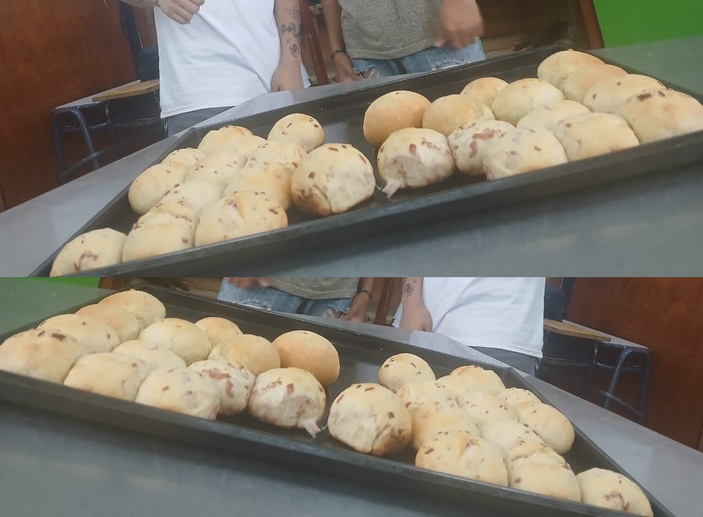
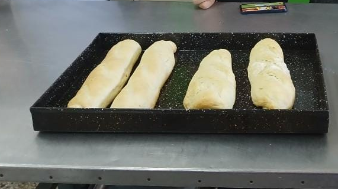

En este proyecto los estudiantes aprendieron técnicas básicas de panificación, elaborando prepizzas y panes rellenos de manera artesanal. Durante el proceso trabajaron con la preparación de la masa, el fermentado, el amasado, el armado y la cocción del producto final.
Colocar 250 g de harina 000 en un bol. En el centro agregar la levadura fresca, una cucharadita de azúcar y un poco de leche tibia. Mezclar ligeramente y dejar reposar aproximadamente 15 minutos hasta formar el fermento.
Incorporar la sal por los bordes y agregar el resto de la leche hasta formar la masa. Luego bajar a la mesa y amasar agregando de a poco la manteca a temperatura ambiente, hasta obtener un bollo liso y elástico. Dejar leudar tapado hasta que duplique su volumen.
Desgasificar la masa, estirarla en forma de rectángulo y colocar el relleno de salame y queso en el centro. Formar un rollo, sellar bien los extremos y colocar en una placa. Dejar leudar nuevamente y cocinar en horno durante aproximadamente 25 minutos, hasta obtener un dorado uniforme.

En este proyecto los estudiantes aprendieron distintas técnicas de panificación elaborando panes saborizados y prepizzas. Durante la práctica desarrollaron habilidades de amasado, fermentación, formado de piezas y cocción, obteniendo productos de excelente calidad.
Diluir la levadura en la leche junto con el azúcar. Colocar la harina en un bol con la sal por los bordes y agregar en el centro el fermento. Trabajar hasta lograr una masa homogénea. Incorporar la manteca pomada y el salame picado.
Dejar descansar la masa durante 10 minutos. Luego porcionar bollos de aproximadamente 60 gramos, darles la forma deseada y dejar leudar hasta que dupliquen su volumen. Si se desea, pintar con huevo antes de hornear. Cocinar a 180 °C hasta que los panes estén dorados. Una vez fríos pueden utilizarse para preparar sándwiches con distintos rellenos.
Este trabajo permitió que los estudiantes conocieran las técnicas básicas de panificación, desarrollando habilidades prácticas, organización del trabajo y manipulación responsable de alimentos, favoreciendo el aprendizaje mediante la elaboración de productos reales de excelente calidad.